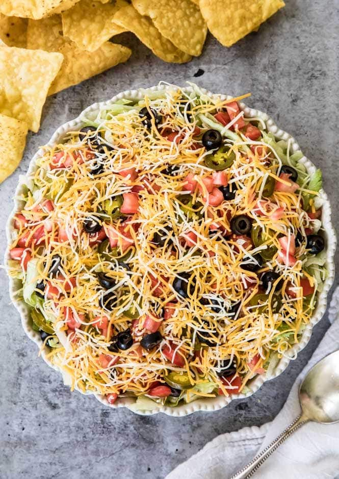

Auntie Donna's World Famous Taco Dip

Description
This is the dip that goes the fastest at a party, double it if you are going there are more than six people. Served with Tostito Scoops
Ingredients
- 16 oz. Sour Cream
- 1 can of refried beans
- 1 package of taco seasoning
- Scallions
- Tomatoes
- Black Olives
- 1 package of shredded Mexican cheese
- Iceberg Lettuce
- Jalepenos (optional)
Instructions
- Mix the sour cream and taco seasoning together
- Layer the refried beans on the bottom of the glass casserole dish
- Layer the sour cream next
- Then layer lettuce, scallions, tomoatoes, black olives and cheese
- Add jalepenos if wanted
- Serve chilled with Tostitos Scoops